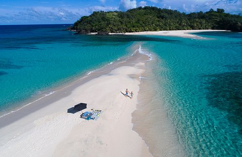

01 / Island
White Island
This bright sandbar sits off the coast of Camiguin and is known for its clear water and open views of the island's volcanic peaks. Visitors usually reach it by a short boat ride, and there is little shade on the sand.
Location: Mambajao, Camiguin